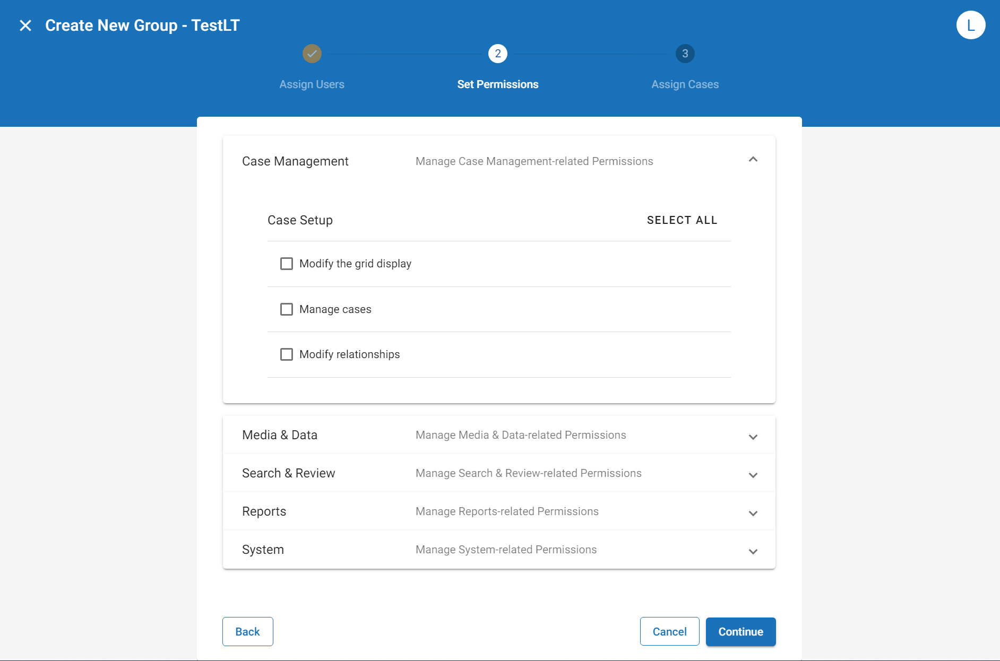

The System Manager opens. In the left pane of the System Manager, click Groups.

Administrators have the ability to assign permissions to a group. These permissions then filter down to all users assigned to that group. Users cannot be assigned permissions directly, but rather inherit the permissions that have been set at the group level.
The sections in this topic describe the steps you can take to assign permissions to a new group, modify the permissions of an existing group, or override the permissions for a particular case. These procedures are completed in the System Manager. To learn how to create a new group or modify an existing group, see
For a full list of permissions available in
Complete the following steps to assign permissions to a new group:
The System Manager opens. In the left pane of the System Manager, click Groups.
Create a new group. You have the option to create a new group from scratch, from an existing group or from a security template. The way you create the new group will affect how permissions are assigned. For more information on each workflow, see
On the Assign Users step, select the users you would like to assign to the new group. Selected users are highlighted in blue. To assign all users to the group, click Select All in the top-right corner of the box. To search for individual users, type the name in the search bar. When all needed users have been selected, click Continue.
After creatingyour group via one of the options above, and assigning users to the new group, you will reach the Set Permissions step. If you have chosen to create a new group from an existing group or security template, permissions selections will be pre-populated. If you have chosen to create a new group from scratch, or would like to make changes to the pre-populated selections, expand the needed section (Case Management, Media and Data, Search and Review, Reports, or System), then click the check box beside each permission you would like to provide to or remove from the group. You can select all permissions in a given section by clicking Select All at the top right corner of the section. You can clear all permissions in a given section by clicking Select All again. In certain places, permissions can be selected from a drop-down menu. To learn more about the list of available permissions, see

On the Assign Cases step, select the cases that you would like to make accessible to the new group. Selected cases are highlighted in blue. To assign the group to all cases, click Select All in the top-right corner of the box. To search for specific cases, type the name of the case in the search bar. When all needed cases have been selected, click Save.
Complete the following steps to modify the permissions of an existing group. For more information, see
The System Manager opens. In the left pane of the System Manager, click Groups.
Click on the name of the group you would like to edit. The group profile opens on the right side of the screen.
Click the Edit icon  . You are now able to modify the users, permissions, and cases for the selected group.
. You are now able to modify the users, permissions, and cases for the selected group.
On the Permissions tab, expand the needed section (Case Management, Media and Data, Search and Review, Reports, or System), then click the check box beside each permission you would like to provide the group. You can also remove a permission from the group by clicking on a check box that has already been selected. To learn more about the list of available permissions, see
Click Save.
Repeat these steps for all groups needing to be edited.
Inform users of changes and explain their new responsibilities.
When a group is assigned to a case, that case "inherits" the group's permissions. Therefore, if a group is assigned permissions A, B, and C, the users in that group will only be allowed to perform actions A, B, and C when working in that case. However, an option exists that allows you to override the permissions for a particular case. For example, let's say a group with permissions A, B, and C have been assigned to four different cases. If you would like that group to have a different set of permissions for Case #3 (e.g., permissions B, C, and E), you can override that case's permissions, then set new permissions to fit the needs of the case in question.
For instructions on how to override permissions on a case, proceed through the following steps:
The System Manager opens. In the left pane of the System Manager, click Groups.
Click on the name of the group whose case permissions you would like to edit. The group profile opens on the right side of the screen.
Click on the Cases tab, then locate the cases whose permissions you would like to override. Each case in the list will either display "Permissions Inherited" or "Permissions Overridden."
"Permissions Inherited" indicates that the permissions set at the group level will apply to that particular case.
"Permissions Overridden" indicates that the permissions set at the group level have been altered for that particular case.
To change the permissions for a specific case, click Override Permissions.
A window pops up with the full list of permissions available in
When finished applying permissions, click Save. The case displays "Permissions Overridden" in the System Manager to indicate that changes have been made to the permissions list.
Repeat these steps for all cases with permissions that need to be overridden.
Related Topics